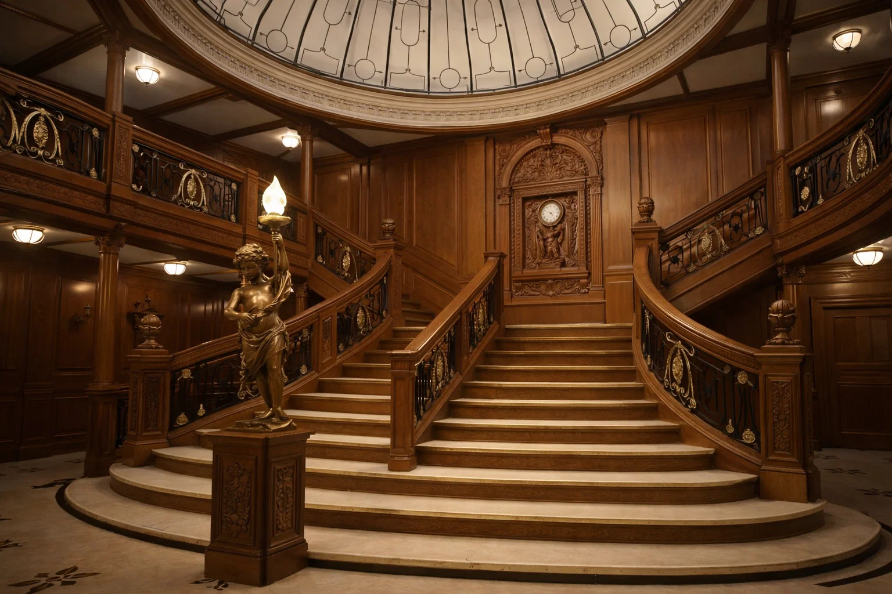
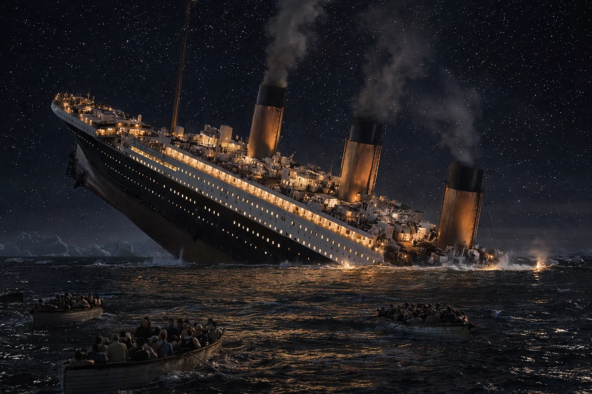

--- L’histoire complète du Titanic ---

Le Titanic, mis à flot en 1912, était à son époque le plus grand et le plus luxueux paquebot jamais construit. Conçu par les chantiers navals Harland and Wolff à Belfast, il représentait l’ambition, la puissance industrielle et le rêve d’un voyage transatlantique d’un confort inégalé.
Son voyage inaugural débuta le 10 avril 1912. Parti de Southampton, il fit escale à Cherbourg puis à Queenstown avant de se lancer vers New York avec plus de 2 200 personnes à bord : des milliardaires, des familles, des travailleurs, et un équipage impressionnant.
--- L’intèrieur du Titanic ---
À bord, le paquebot proposait des salles de sport modernes, un restaurant luxueux, des salons richement décorés et même une piscine. Les passagers de première classe bénéficiaient d’un confort exceptionnel, tandis que ceux de troisième classe voyageaient dans des conditions plus modestes mais bien supérieures aux standards de l’époque.
--- La nuit du naufrage ---
Dans la nuit du 14 au 15 avril 1912, à 23h40, le Titanic heurta un iceberg. Bien que la collision parût légère pour la plupart des passagers, elle ouvrit une longue entaille sous la ligne de flottaison.
Conçu pour résister à l’ouverture de quatre compartiments étanches, le navire en vit cinq envahis par l’eau. Le destin du Titanic était alors scellé. Les canots, en nombre insuffisant, furent mis à la mer tandis que l’orchestre continuait à jouer pour calmer la panique.
À 2h20 du matin, le Titanic disparut sous les eaux glaciales de l’Atlantique Nord. Plus de 1 500 personnes perdirent la vie cette nuit-là, faisant du naufrage l’une des plus grandes tragédies maritimes de l’histoire.
→ Voir la page Construction